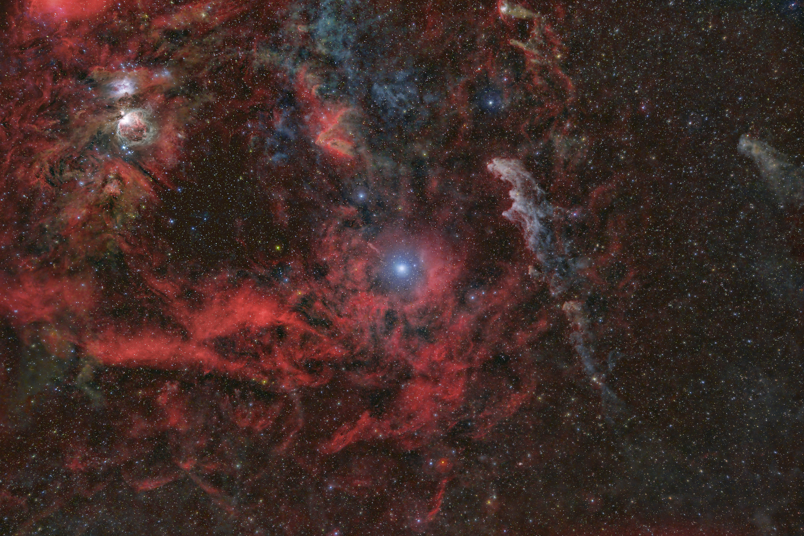

IMAGE: Rigel | IMAGE CREDIT: Rheinhold Wittich
Dusty's Log Entry:
- Type: supergiant
- Temperature: about 10,000 - 30,000 K
- Mass: about 20 - 40 Suns
- Lifespan: a few million years
- What's Next: supernova
Blue supergiants are hot, massive stars that have left main sequence, but haven't cooled or swelled like a red supergiant. These stars remain hot and extremelty bright, much more brighter than the red supergiant and 100,000 brighter than the Sun. Some blue supergiants are young stars at the start of their giant phase. On the other hand, other blue supergiants can be stars that were reviously red supergiants which shrank and heated up again.
Example of the blue supergiant includes Rigel.